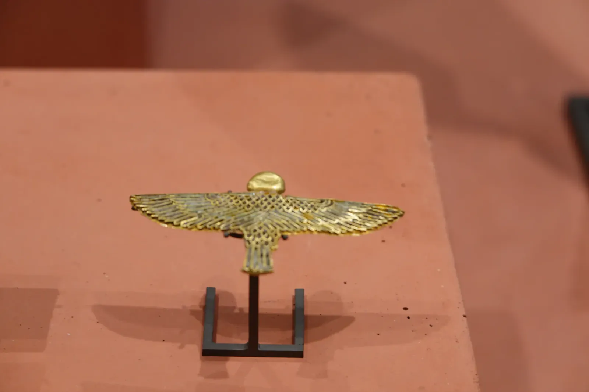

Second Glance
In 2016 I spent two days in Paris and promised myself I would come back with better French. It took almost seven years. When I finally returned it was late November, damp and gray, and from the Louvre the top of the Eiffel Tower simply vanished into the fog behind one of the palace's pavilions. Not exactly postcard weather, but I'll take a moody Paris over a perfect one.
Inside the Louvre, the gray turned to gold. The Napoleon III apartments are pure excess, with crimson velvet, gilt on every surface, crystal chandeliers and a dining room with a table set for dozens. Napoleon III is also the emperor who put Baron Haussmann in charge of rebuilding Paris, so the cream-colored apartment blocks outside, with their iron balconies, belong to the same era as these golden rooms. Whatever you think of the man, the dense blocks and wide boulevards he left behind are a big reason Paris is still such a good city to walk. Even among all that gilt, I drifted toward the mountains: an Alpine lake as still as glass in a gold frame. A hiker can't help it.


Montmartre came next. From the hill at Sacré-Cœur, Paris spreads out to the haze in a patchwork of zinc roofs and cream stone, and inside the basilica a vast blue and gold mosaic glows above the altar. I also made time for the Catacombs, about as far from gilded as Paris gets. They hold the remains of millions of Parisians, which puts all that gold leaf in perspective. Book a timed ticket ahead, since they only let so many people down at once.
The next day I walked along the Seine, past houseboats moored under yellow plane trees with the Grand Palais hazy in the distance, and ended up at the Orsay. It started out as a train station for the 1900 World's Fair, and under those huge arched windows and that coffered ceiling you could happily miss a train. Naturally, I headed for the landscapes again: the Cirque de Gavarnie, the chalk cliffs of Étretat, Monet's irises and a pale winter frost. A painted lion stared me down from a green wall, and a cutaway model of an opera house, the Palais Garnier I think, showed how much machinery hides behind all that gilt. Paris hasn't changed much since my first visit, which makes it a handy ruler for how much I have.